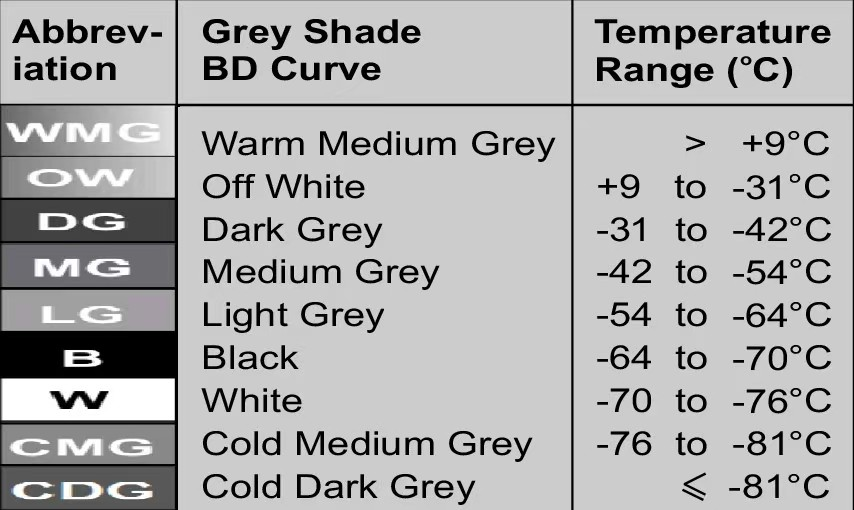
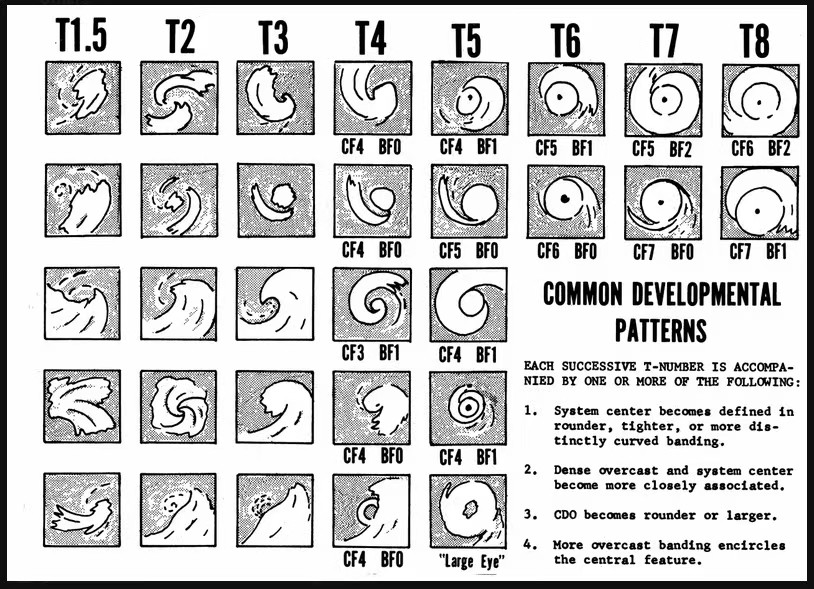
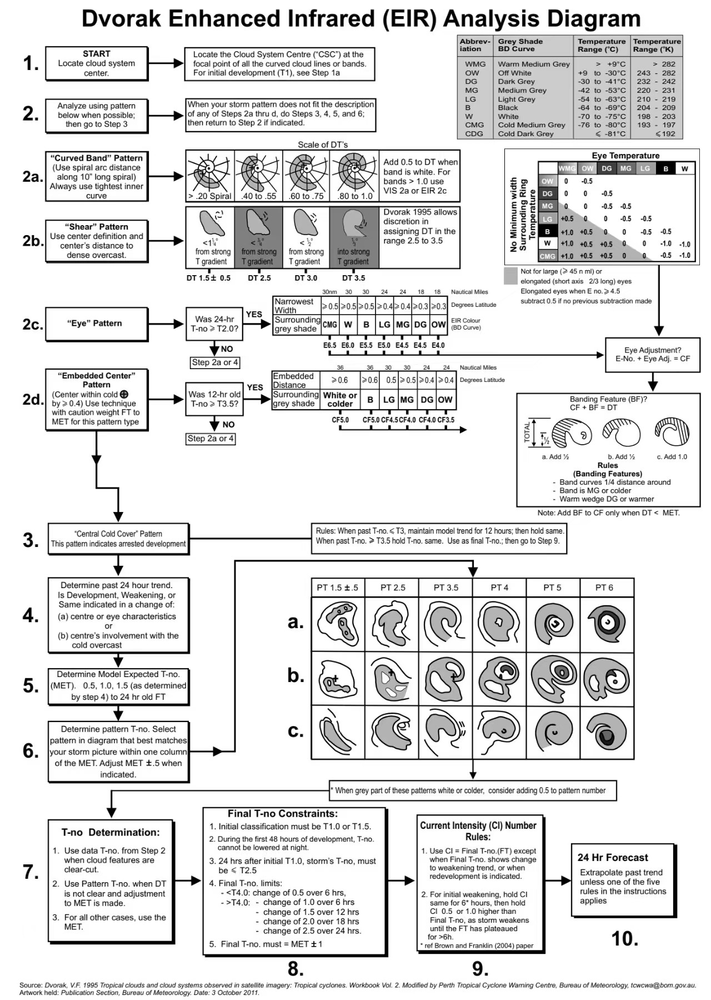

CMA 最大风力— CMA 强度— 中心气压— 中心位置— JTWC 风速— ADT 强度—
- CMA 最大风力
- —
- CMA 强度等级
- —
- JTWC 最大风速
- ——
- 中心气压
- ——
- 中心位置
- ——
- 最大风速半径
- ——
- ADT 当前强度
- —
- Final T
- —
- 风眼 / 中心温度
- —
- 云区温度
- —
- ADT 云型
- —
- ADT 分析时次
- —
TROPICAL CYCLONE ANALYSIS WORKBENCH · WEB
WESTERN NORTH PACIFIC · LIVE
点击任一图像查看来源站原图
不同模式存在分歧，请结合业务机构预报判断
西北太平洋区域产品 · 非单一风暴定点图
当前风暴、图层与时间窗口
从 Dapiya 自动读取当前活动风暴。
网页版仅展示界面，不会实际下载或预览图片。
图片下载和视频参数相互独立
所选位置下会自动创建 download 原图目录和 video 视频目录。
Workers = 同时下载多少张图片。20 表示最多并行处理 20 张；网络不稳定或网站限速时请降低。
不设置固定下限，只要求大于 0：0.1 秒 = 10 帧/秒；Skip Every 0 = 不跳帧。
不联网、不重新下载；可反复修改速度、跳帧和格式
尚未选择图片文件夹。可以选择本工具以前的 download 任务目录，也可以选择其他图片目录。
每帧间隔不设固定下限，但必须大于 0。原图片不会被修改或删除。Skip Every 1 表示每隔一张取一张；输出写入当前“保存位置”的 video 目录。
先分别导出 VIS、BD、TRUE COLOR 等视频，再按这里的列表顺序合并
尚未选择视频。至少选择两段；列表从上到下就是播放顺序。
TROPICAL CYCLONE WORKBENCH
集中查看卫星遥感、数值预报、业务警报和强度诊断资料。内嵌区仅保留已验证可用的 Windy 与 Himawari 机动观测。
Satellite Remote Sensing & Tropical Cyclone Products
Numerical Weather Prediction & Environmental Fields
Operational Forecast & Warning Agencies
Intensity Estimation & Historical Archives
不自动定位。可保存 Meteoblue 地点页、Windy 分享链接或其他常用页面；记录仅保存在本机浏览器。
REFERENCE
Dvorak Satellite Intensity Analysis
图像与说明按分析步骤对应排列；点击图片可查看原尺寸。它们用于学习与辅助判读，正式定强仍须遵循业务机构规则。

WMG 至 CDG 表示不同亮温区间。CMG、CDG 对应极低云顶温度和很强的深对流，但单凭某一色阶不能直接确定强度。
查看 CIMSS EIR 色阶与分析教程 ↗

先确定云系中心与主导云型，再求资料 T 数（DT）、模式期望 T 数（MET）和云型 T 数（PT），最后应用变化率约束得到最终 T 数与当前强度（CI）。
查看 CIMSS ADT 专业说明 ↗